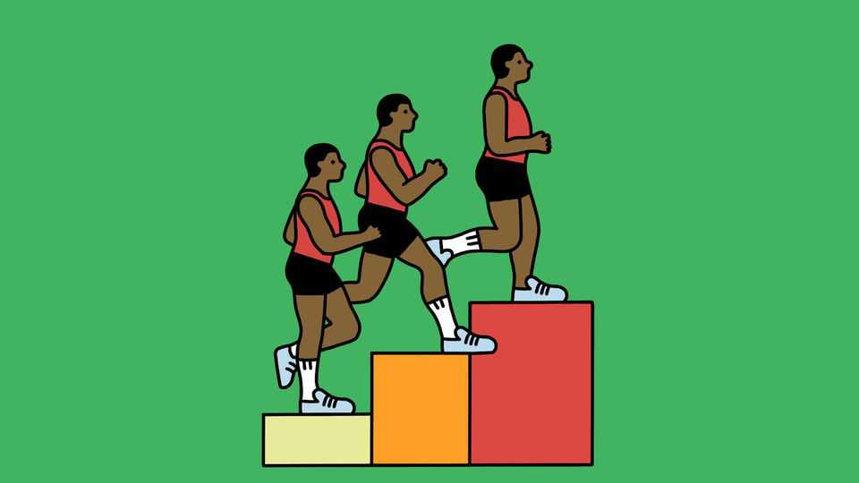

Can joggers outrun injury?
Patience when training goes the extra mile

Oct 22nd 2026
KNEE PAIN in joggers is prevalent enough to be a term of art. “Runner’s knee”, an ache around the kneecap, was among the most common complaints in a study of 3,669 runners published in the Orthopaedic Journal of Sports Medicine (OJSM) in 2021. But it is only one of an assortment of “overuse” injuries: those caused by training that, though tolerable in parts, cumulatively exceed the body’s capacity to recover.
Such problems can compound. The study found that a previous injury increased the odds of another by 62%. Hence a widespread worry that a lifetime of running will wear down joints and eventually lead to arthritis. How can runners keep injuries at bay?
Throwing money at the problem does not help. A review published in the Cochrane Database of Systematic Reviews, in 2022, found little evidence that different running-shoe designs affect their owners’ susceptibility to injury. The OJSM study from 2021 concluded that stretching before a jog did not help, either.
Instead, when taking up running or increasing the distance covered, the old adage of “slow and steady” is the one to follow. Novices report injuries more than twice as often as experienced runners, according to a review published in Sports Medicine in 2015. Some of this may be down to differences in expectations, says Rasmus Nielsen, an epidemiologist at Aarhus University in Denmark. A beginner might panic and report a twinge that a more experienced runner knows will pass on its own.
But doing too much too soon is a risk even for seasoned sprinters. A study of 5,205 runners published by Dr Nielsen and his colleagues in the British Journal of Sports Medicine, in 2025, found that running 10-30% farther in a single session than the previous month’s longest run was associated with a 64% higher rate of overuse injury.
Increasing training load slowly gives the body a chance to adapt. Using tendons stimulates collagen production, causing them to stiffen and thicken so that they are more resilient to strain. Repeated impact activates bone-strengthening cells known as osteoblasts, gradually increasing resilience to stress fractures. And, rather than damaging knee cartilage, running strengthens the muscles that help protect the joint.
Building resilience takes time. Changes in tendons occurred in studies lasting around 8 to 12 weeks, according to a review published in Sports Medicine in 2015. Increases in shinbone density have been detected after eight weeks of intensive military training. Another study found that bone mineral density improved after six months of resistance and jumping training.
To be on the safe side, Dr Nielsen recommends keeping any single run to no more than 5% longer than the past month’s longest run, and that any week’s total not exceed 110% of the previous week’s. For beginners, particularly those with high body-mass indices or a history of injury, 3km of cumulative walking and running in the first week of training is a safe starting point.
Happily, there is little evidence that running is associated with long-term joint problems. A study of 3,804 marathon runners published in Sports Health, in 2024, found no association between running history and the risk of arthritis. Accidents involving the knee, such as tears in its cartilage, can cause persistent issues. But as Dr Nielsen points out, such injuries can strike anyone. With sufficient caution, joggers can keep going for the long run.■
After a free, evidence-based guide to health and wellness? Sign up to our weekly Well Informed newsletter.